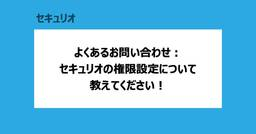

CloudNative Inc. BLOGs
https://blog.cloudnative.co.jp
株式会社クラウドネイティブのブログ。情報システムに関するマニアックな記事から、ちょっと変わった？ 社風までざっくばらんにご紹介。
フィード

よくある質問：セキュリオの権限について教えてください
CloudNative Inc. BLOGs
はじめに セキュリティチームのばーちゃんです！ 本ブログでは、セキュリオの権限を解説します。「どの従業員にどの権限を付与すればいいのかわからない」「自社に合った権限設定がしたい」といったお悩みをお持ちの方もいらっしゃるの […]
2日前

NetskopeのNPA Publisherをユーザー影響を最小限にしてアップデートする
CloudNative Inc. BLOGs
はじめに こんにちは、セキュリティチームのむろです。 今回はNetskopeのPublisherのアップデートで少し特殊な方法を検証したのでブログで公開していきます。 注意 本手順はサポートへ個別で問い合わせした内容に基 […]
16日前
次世代 日本語IME azooKey を使い始めて文章作成が快適になった話
CloudNative Inc. BLOGs
IDチームの前田です。先日NuPhy Air 75 V3が発表され、NuPhy Air 60 V1/V2ユーザーとしては大変気になっています。V3からはJISモデルもありますので、NuPhyキーボードのデビューにおすすめ […]
16日前
【Microsoft Entra】公式から条件付きアクセスの展開ガイダンス機能が出たので使ってみた
CloudNative Inc. BLOGs
はじめに こんにちは。先日、山形日帰り弾丸旅行した際に食べた「冷たい肉そば」が美味しすぎたので、都内で食べられるお店を探しているIdentityチームのすかんくです。 今回はMicrosoft FastTrackチームが […]
20日前
Okta Workflows イベントフック使いこなし術！運用を効率化しよう！
CloudNative Inc. BLOGs
ごきげんよう、IDチームのわかなです！ 今回は、Okta Workflowsの「イベントフック」を使いこなすための実践的なコツをお届けします。 はじめに OktaのイベントをトリガーにWorkflowsを動かす方法には、 […]
23日前
【re:Inforce2025 現地参加レポート】SEC231: Scale Security Ownership: Building Your Security Champions Program
CloudNative Inc. BLOGs
こんにちは、ひろかずです。 今年もre:Inforce 2025が開催されました。re:Inforceでは、全ての人がセキュリティに係わっていくという文脈で、AWSの文化や考え方、実践していることのアップデートが毎回共有 […]
1ヶ月前
【re:Inforce2025 現地参加レポート】GRC304-NEW: Maintain business continuity using AWS Backup and Multi-party approval
CloudNative Inc. BLOGs
こんにちは、ひろかずです。 今年もre:Inforce 2025が開催されました。その中で、Keynoteにも取り上げられなかった新機能が、ひっそりとNew Release セッション「GRC304-NEW: Maint […]
1ヶ月前
よくあるお問い合わせ：セキュリオは多言語対応していますか？
CloudNative Inc. BLOGs
はじめに セキュリティチームのばーちゃんです！ 本ブログでは、お客様からいただいたお問い合わせを基に、セキュリオの多言語対応を紹介します。 お問い合わせ内容 セキュリオは多言語対応していますか？ お問い合わせの背景 前提 […]
1ヶ月前
Google WorkspaceをメインIdPとしてAutopilotは使えるか？
CloudNative Inc. BLOGs
はじめに こんにちは！入社3週目、新人PMおじさんのkenkenです。先週の主なお仕事は「知らない3文字英語をひたすら調べて理解する」でした。あとは、なぜか社内ドライブに入っていた「ゼロトラストについてとてもよくわかる本 […]
1ヶ月前
緊急時のためにOktaへ問い合わせだけが出来るユーザーを作成する
CloudNative Inc. BLOGs
IDチームの前田です。今回はOktaで問い合わせだけが出来るユーザーを作成する方法をご紹介します。 企業のIdPとしてOktaを利用している中で、システム管理者ではない特定のユーザーにもOktaのサポート窓口へ問い合わせ […]
1ヶ月前